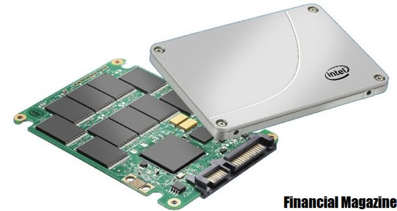

HDD
A este tipo de discos duros se le llama mecanicos y emplean un sitema d egrabacion magnetica para almacenar archivos digitales. Estan compuestos de piezas mecanicas y se compone de uno o varios discos rigidos unidos por un mismo eje y que a gran velocidad velocidad dentro de una caja metalica. En cada plato y en cada una de sus caras, un cabezal de lectura,escritura lee o graba los datos sobre los discos.
Para comunicarse con la computadora los discos duros utilizan un controlador que emplea una interfaz estandar y estos pueden ser: Serial ATA o SATA, IDE, y SCSI.SDD
Un SDD (unidad de estado sólido) es una nueva generación de dispositivos de almacenamiento que se emplea en equipos. Los SSD reemplazan los discos duros mecánicos tradicionales con una memoria basada en flash, significativamente más rápida. Las antiguas tecnologías de almacenamiento en disco duro son más lentas, lo que suele provocar que su equipo funcione más lento de lo que debería. Los SSD aceleran los equipos de forma significativa gracias a su bajo tiempo de acceso de lectura y su veloz rendimiento.
Durante décadas, los datos se han almacenado principalmente en unidades de disco mecánicas. Estas unidades de disco duro (HDD) tradicionales se basan principalmente en piezas móviles, como un cabezal de lectura/escritura que se mueve adelante y atrás para reunir datos. Esto convierte a los HDD en el componente de hardware más propenso a fallos en un equipo.
Disco Externos
Un disco duro externo es un sistema de almacenamiento de datos que se conecta al dispositivo principal (ordenador de sobremesa, portátil, tablet, etc) para guardar información que no se va a requerir de forma constante.
La información almacenada en un disco duro externo permite transportarla y compartirla con otros dispositivos. Habitualmente se utilizan para hacer copias de seguridad del disco duro interno de un ordenador o para almacenar archivos que van a reproducirse en otros dispositivos como películas o música. También son útiles para añadir capacidad adicional de almacenamiento a un ordenador.

Menu
Palabras Sabias
 La duda es uno de los nombres de la inteligencia..
La duda es uno de los nombres de la inteligencia..
Jorge Luis Borges